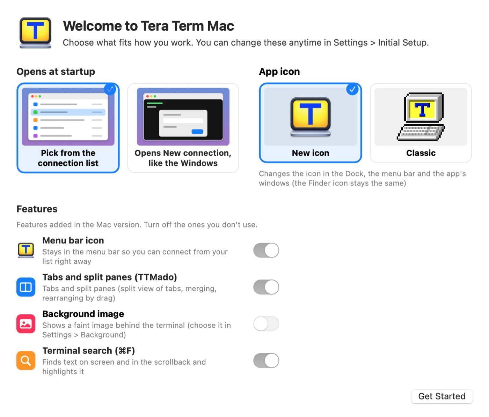

Launching, quitting and updates
The first launch (Initial Setup)
The first time you start the app, "Welcome to Tera Term Mac" appears. Choose what fits how you work and click [Get Started].
- Opens at startup: pick from the connection list (TTMenu), or open New connection like the Windows version
- App icon: the new icon, or the classic icon by T. Teranishi (changes the icon in the Dock and the menu bar)
- Features: the menu bar icon, tabs and split panes (TTMado), background image and terminal search (⌘F). Turn off the ones you don't use

Click a picture to choose it. You can change these anytime in Settings > Initial Setup (the settings layout can be chosen there too)
When the app starts
- When Tera Term Mac starts, the list of connections (TeraTerm Menu's list editor) opens (or a terminal and New connection, if you chose that in Initial Setup). It is empty at first.
- To connect right away, press ⌘N (File > New connection...). Continue with "Connecting to a server with SSH".

The list of connections that opens at startup (with two example entries). See "Saving connections you use often".
Menu bar icon and quitting
A Tera Term Mac icon appears on the right side of the menu bar at the top of the screen. The app keeps running when all windows are closed, and you can pick a connection from this icon.
To quit the app, press ⌘Q. If a window is still connected, you are asked to confirm.
Updates
- When a new version is out, the app asks whether to install it. Click the button and it is replaced.
- To check yourself, choose [Check for Updates...] in the [Tera Term Mac] menu.
More details
Back to the quick guide | Next: Connecting to a server with SSH